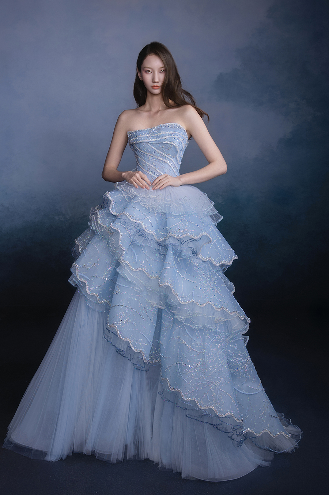
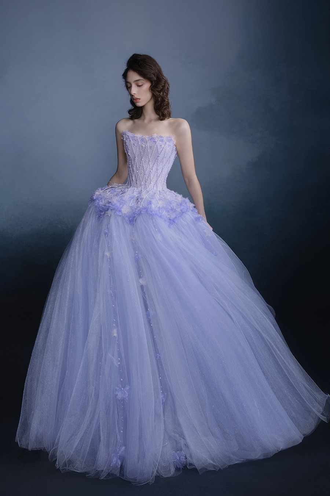

Renata
$11,303.46

Annalise
$11,303.46

Callista
$16,364.85
The radiance of stars falls from distant light years, like a vortex painting slowly unfolding, and time and space are immersed in gentle mystery. Fingertip touch, twinkling stars, pouring Milky Way, overflowing romance. Every ray of light is the whispers of the stars, leading us to encounter the exquisite interweaving of the universe, dreams, and romance, and feel the true and profound charm of the starry sky. The Bridal By The Atelier 2025 Autumn/Winter collection draws inspiration from the grandeur of Russian architecture and the dreamlike interweaving of stars. Craftsmen cleverly capture the whispers of the Milky Way, using fabrics as carriers to replicate the beauty of celestial bodies, creating a dreamy wedding dress that dances with the stars. Various concrete decorative patterns are interspersed in the series design, such as "simulating light floating in the direction of star orbit" and "ancient Russian architecture". Designers use techniques such as car bars, hot stamping, lotus leaves, and machine embroidery to ingeniously decompose and recombine various crafts, creating magical artistic effects. Ice blue aurora hot stamping and scattered star stitching beads add brilliant radiance. Each dress is crafted with ingenuity, allowing the bride to become the protagonist of a starry sky dream, blooming with unique and romantic charm, interpreting The Atelier's unique starry sky romanticism.
Step into our immersive virtual gallery and experience The Phantom Stars collection like never before.